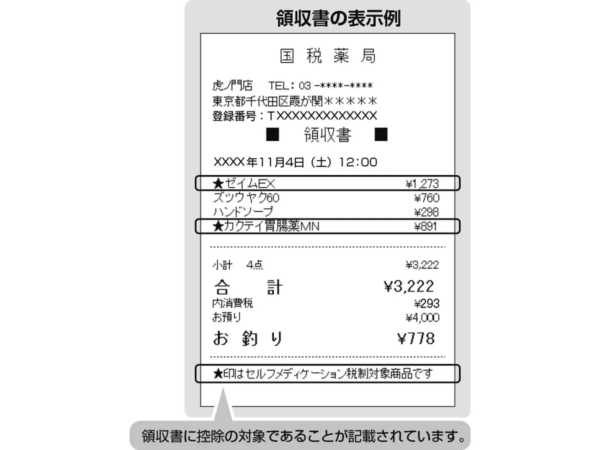
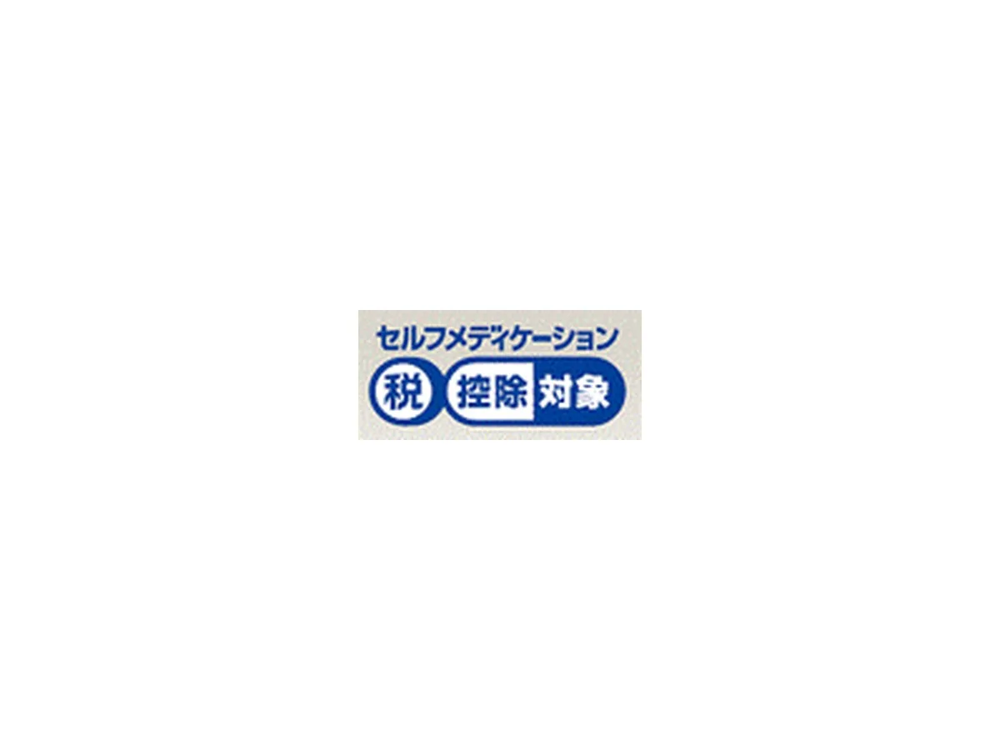

セルフメディケーション税制と通常の医療費控除の違いは、集計する支出と、そこから差し引く基準額です。同じ人の同一年分では一方を選びます。2026年分は、対象の市販薬代と医療費全体をそれぞれ集計し、使える制度の控除額を比べてから申告します。制度は2026年11月23日時点で確認しました。
01いくらから使える？対象費用と控除額の違い
| 項目 | セルフメディケーション税制 | 通常の医療費控除 |
|---|---|---|
| 集計する費用 | 対象の市販薬などの購入費 | 診療費や治療に必要な薬代など、対象の医療費 |
| 自己負担額から引く基準額 | 12,000円 | 10万円。総所得金額等が200万円未満ならその5% |
| 控除額の上限 | 88,000円 | 200万円 |
| 健診などの要件 | 申告する本人がその年に所定の取組を行う | この要件はありません |
自己負担額は、対象費用から保険金などで補てんされた分を差し引いて求めます。通常の医療費控除では、受け取った給付金は対応する医療費から差し引きます。入院費を上回る入院給付金が出た場合でも、その余りを別の通院費から差し引く必要はありません。
総所得金額等は、給与の額面年収とは異なります。 10万円を超えていなくても、総所得金額等が200万円未満なら5%を使って通常の医療費控除を計算してください。
02対象の市販薬と健診はどう確かめる？
申告する本人が2026年中に受けた勤務先の定期健康診断やインフルエンザの予防接種などは、特例の要件になり得ます。生計を一にする家族のために本人が支払った費用も、対象薬の購入費なら集計に入れられます。

領収書の図では、対象品に星印が付き、欄外に印の意味が書かれています。レシートの対象表示を手がかりに、品名を厚生労働省の対象品目一覧で確かめます。 箱に下図の共通識別マークが付いた商品もあります。

03控除額を計算してどちらを選ぶ？
以下は総所得金額等が200万円以上で、本人が特例の健診要件を満たす例です。対象薬代は全額が治療に必要で通常の医療費にも含まれると仮定し、表は保険金などを差し引いた後の金額です。
| ケース | 対象薬代 | 医療費全体 | 特例の控除額 | 通常の控除額 |
|---|---|---|---|---|
| 医療費全体が10万円以下 | 30,000円 | 90,000円 | 18,000円 | 0円 |
| 通院などにも支出 | 30,000円 | 140,000円 | 18,000円 | 40,000円 |
例2つ目のケースでは、特例は30,000円−12,000円、通常は140,000円−100,000円です。通常の医療費控除のほうが22,000円多く所得から差し引けます。
総所得金額等が180万円なら、通常の控除の基準は180万円×5%＝90,000円です。自己負担が95,000円なら通常の控除額は5,000円になります。表や例の控除額は所得から差し引く額です。実際の還付額は所得や源泉徴収された税額などで変わります。
04確定申告のやり方と用意する書類
- 2026年1月1日から12月31日までに実際に支払った分を集めます。未払いの医療費は実際に払った年の分です。
- 通常の医療費と特例の対象薬代をそれぞれ集計し、適用条件と控除額を確認します。
- 選んだ制度の明細書を確定申告書に添えます。特例では、対象薬の領収書と健診結果などの証明を、税務署からの照会に備えて保管します。
選択して申告した後は、修正申告や更正の請求で別の制度に切り替えられません。 ふるさと納税もした人は、確定申告に合わせてふるさと納税の年末手続きも確認できます。
05よくある質問
セルフメディケーション税制と医療費控除は併用できますか？
同じ人の同一年分では、どちらか一方を選びます。
市販薬代はいくらから特例の対象ですか？
対象薬の自己負担の合計が12,000円を超えると、他の条件を満たした場合に超えた分を控除できます。
家族も健診を受ける必要がありますか？
所定の健診などが必要なのは、特例を申告する本人です。
06まとめ
結論通常の医療費と特例の対象薬代を別々に集計し、要件を満たす制度の控除額を比べてから申告します。